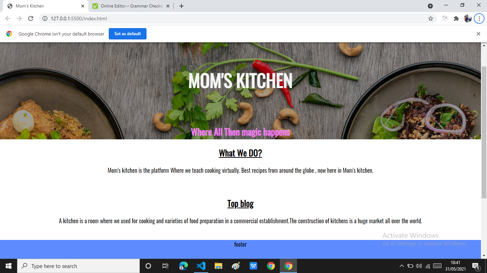

Website Overview
I have created this site as a blogging site for online cooking teaching. Before i started making this site i visited relevent site to gather knowledge about blogging site UI and other things. After getting some knowledge i started working on site.After struggling for sometime i made homepage version 1.

Assets credits
I have used assets from unsplash, They provide free Loyality free images which we can use on our project without copyright issues.
UI/UX concepts
I have used basic HTML and CSS on this project , I have learned many new things and mastered many design tricks when building this project ,It was challanging and fun project to work after all. I got some UI/UX concept from W3schools